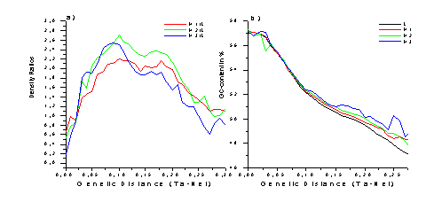

|
Michael Hackenberg[1] and José L. Oliver1
Keywords: Repetitive Elements, Alus, Isochores, Mutation Pressure, Genetic Distances
1 Introduction
Since the finding that the Alu repetitive element family is much more abundant in GC-rich isochores (maximum in H2) than in AT-rich ones, an ongoing discussion exists on which mechanism leads to this biased distribution ([2], [4], [5]). It is known ([4]) that Alus prefer to insert in GC-poor genomic regions and therefore the question rises which mechanism shifts the density maximum from GC-poor to GC-rich regions. An extended opinion is that the Alus shift towards GC-rich regions to lessen the mutation pressure upon them (see [1], [4]). Alus are GC-rich and by installing in GC-rich isochores it is thought that the increased compositional match increases likewise their stability in the GC-rich parts of the genome.
However, taking into consideration all Alus irrespective of their age, it can hardly be determined if this mechanism is the most important or just plays a minor role. To trace the evolution of the Alus in the human genome, we determined their densities and GC-contents as a function of their age. We first align each Alu in the genome to its family consensus using the RepeatMasker algorithm. The Tamura-Nei distance was then used to estimate the Alu ages. The partition of the contigs into isochores was performed using the IsoFinder segmentation algorithm of Oliver, et al (see [3] and references therein).
2 Compositional adjustment of repeats to the isochores
By analysing the Alus as a function of their age, it is possible to monitor the changes suffered by the Alus over time. In Figure 1 we show a) the relative density ratios H*/L (densities in the H isochores divided by the densities in the L isochores) as a function of their age and b) the course of the Alu GC-contents in the different isochores also as a function of their age. It can be seen (graph b) that up to genetic distances of around 0.08 no correlation between the GC of the isochore and the element becomes established. Just from these genetic distances on, the elements seem to note the influence of the isochore. However, as can be inferred from graph a, at these genetic distances the maximum has already shifted to the H2 isochores. This means that long before the elements seem to note the compositional pressure of the isochore, the density maximum has changed. By calculating the GC-content without the CpG dinucleotides (not shown here), it can be observed that the change in GC suffered by young elements is predominantly due to mutations of the CpGs, which do not seem to depend on the isochore. The %GC without the CpGs hardly vary with the Alu age and the change stays within 1%. If mutation pressure was the main mechanism, one might expect a greater influence of the isochore on the element’s base composition.
As a second quantitative measurement of mutation pressure strength we have calculated the number of deletions and insertions suffered by the elements, which is only possible using aligned sequences. Although the results confirm the general validity of the mutation pressure theory (more GC insertions in GC-rich than in AT-rich parts and more AT insertions in AT-rich than in GC-rich regions), we found again that the differences of this mutation pattern between the different isochores is just weakly pronounced. We found that just one out of ten elements show one G or C additionally inserted in H3 compared with the L isochores. The AT insertion mechanism acts slightly stronger but also just one out of five repeats has one A or T additionally inserted in an L isochore compared with H3.

Figure 1: Density ratios between H and L isochores (a). It can be seen that the densities shift very fast from the L isochores towards the H isochores. The GC-content of the Alus in the different isochores are depicted in (b). The GC-content do not show a dependence of the isochores below genetic distances of around 0.08.
3 Summary
An analysis of the Alus as a function of their age is presented. The main change in GC is caused by CpG mutations, which do not depend on the isochore. A correlation between the GC-content of the isochores and the elements is not established until genetic distances of around 0.08. As the density shift takes place yet around genetic distances of 0.03 we infer that, although mutation pressure has definitely an influence on the base composition it may not be sufficient to explain the density shift and the biased distribution of the Alus in the human genome. The weak influence of mutation pressure on the distribution of the Alu elements is also confirmed by the analysis of AT and GC insertions.
4 References and bibliography
[1] Giorgio Bernardi. Misunderstandings about isochores. Part 1. Gene 276 (2001) p. 3-13.
[3] José L. Oliver, Pedro Bernaola-Galván, Pedro Carpena and Ramón Román-Roldán. Isochore chromosome maps of eukaryotic genomes. GENE 276: 47-56.
[5] Arian FA Smit. Interspersed repeats and other mementos of transposable elements in mammalian genomes. Current Opinion in Genetics & Development, 9 (1999) p. 657-663.
[1] Departamento de Genética, Facultad de Ciencias, Universidad de Granada, E-18071-Granada, Spain. E‑mail: genmol@ugr.es